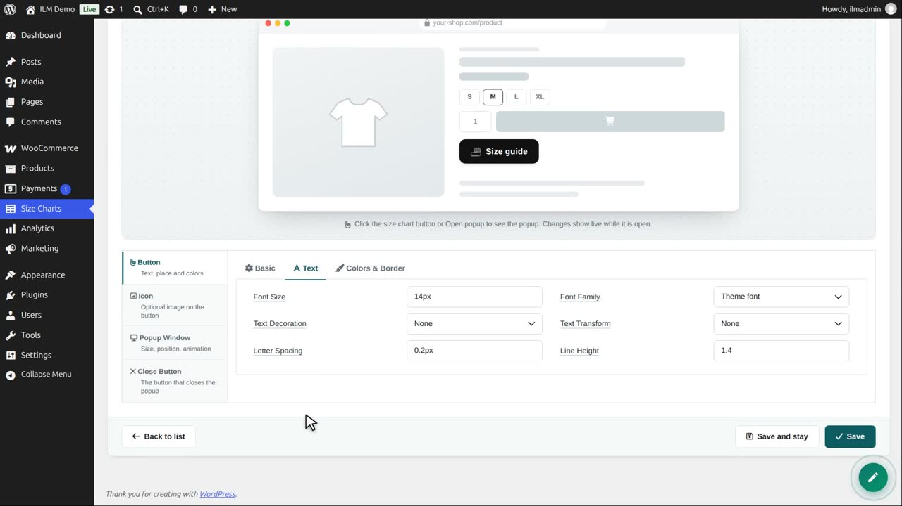
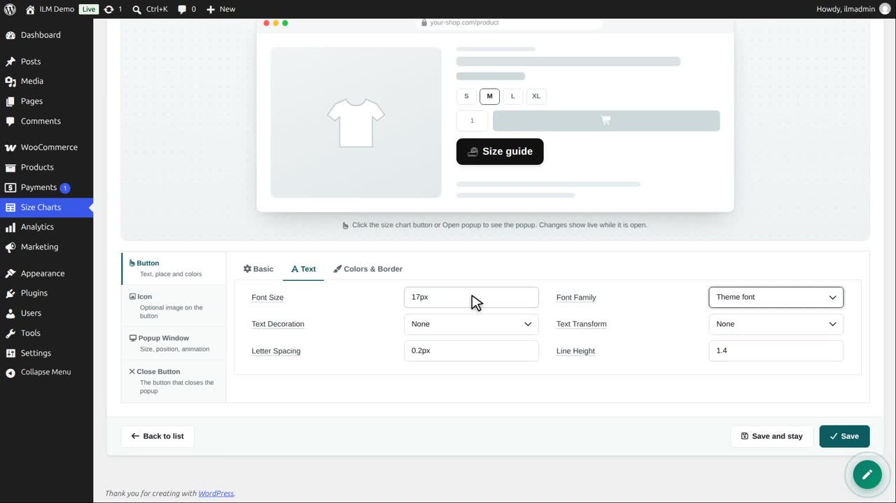
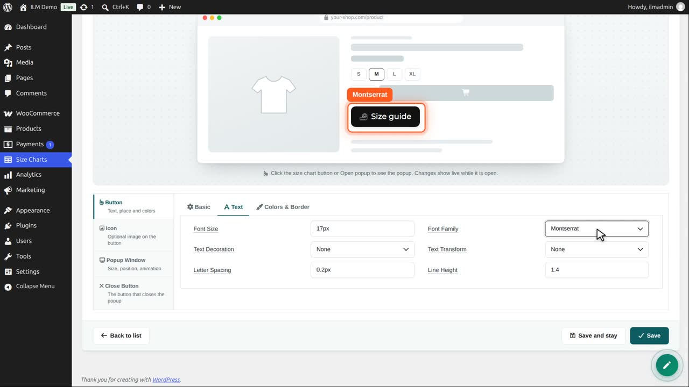
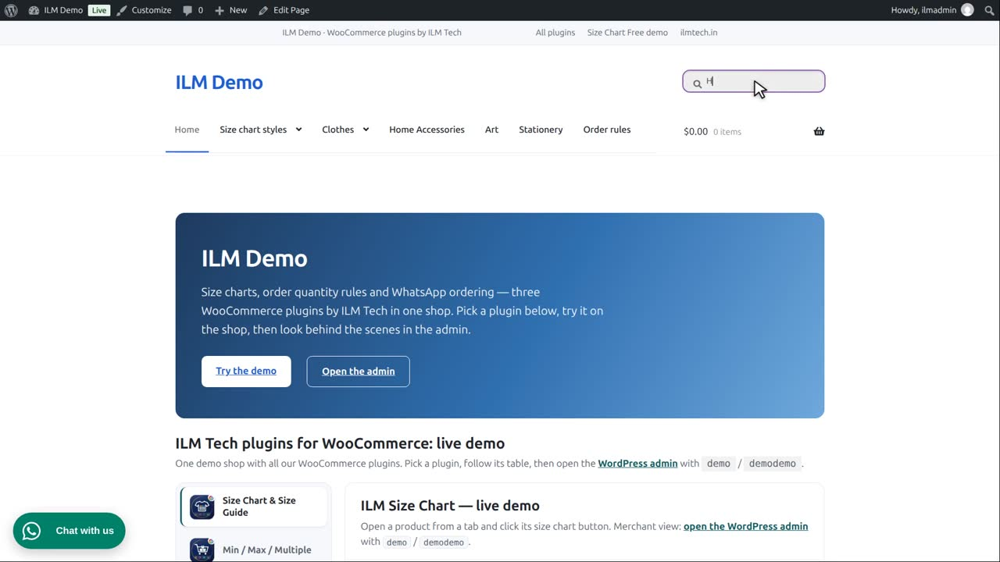
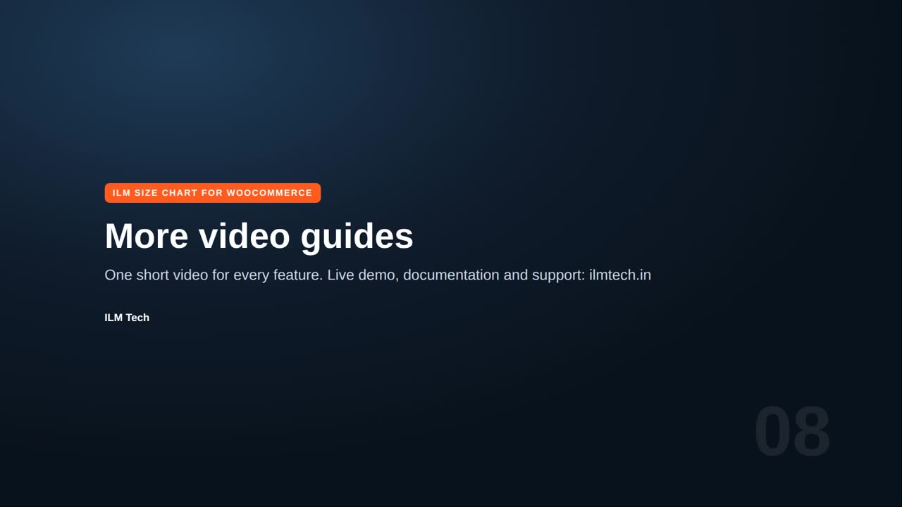

Edit the chart, open Popup Button, then the Text tab of the button.

Font size: we type 17 pixels. The preview grows with it.

Font family: Theme font keeps your shop font, or pick one of the Google Fonts. We choose Montserrat. The shop loads it only on pages that show the button.

Text transform writes it in capitals, small letters, or with a capital on every word. We choose Uppercase.
Letter spacing adds a little air between the letters: one pixel. Line height and text decoration, like underline, are here too.

Save, and the product page shows the same button as the preview.
